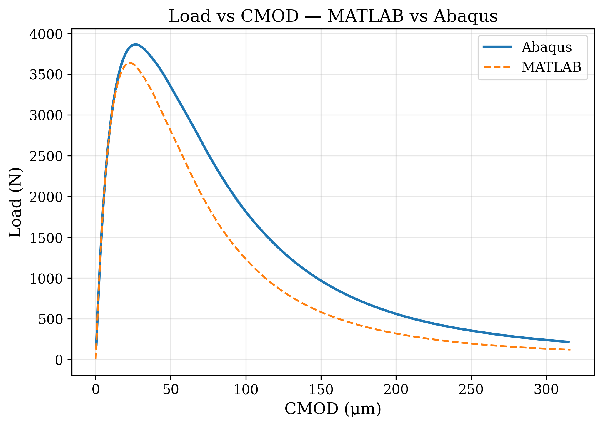
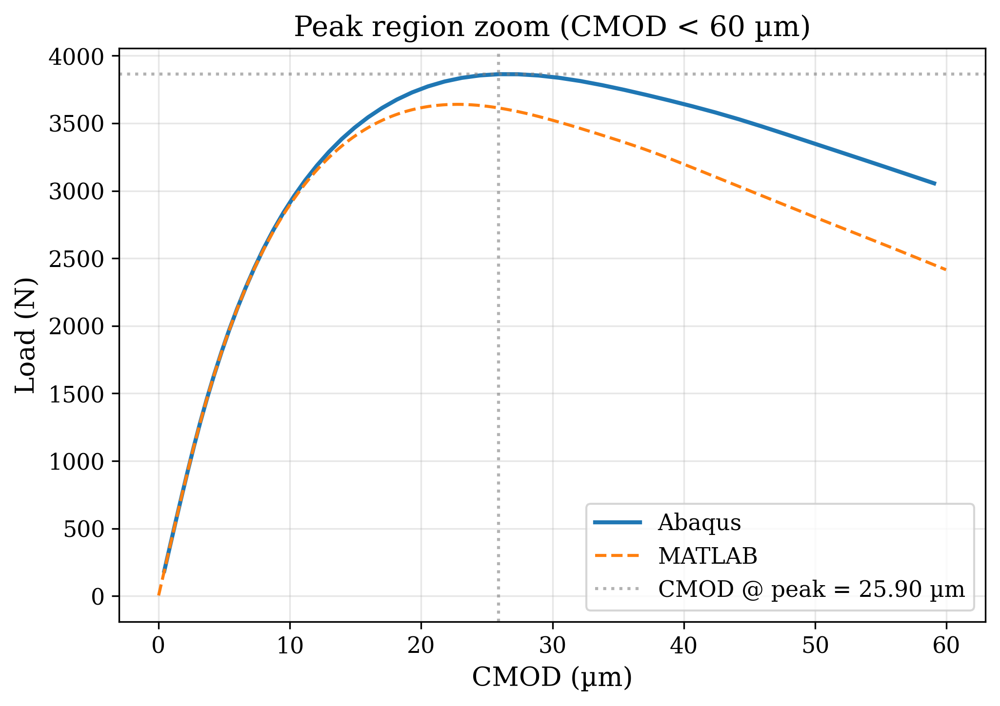
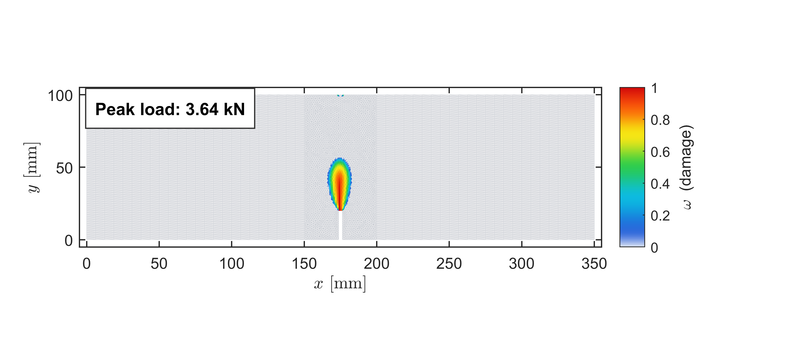
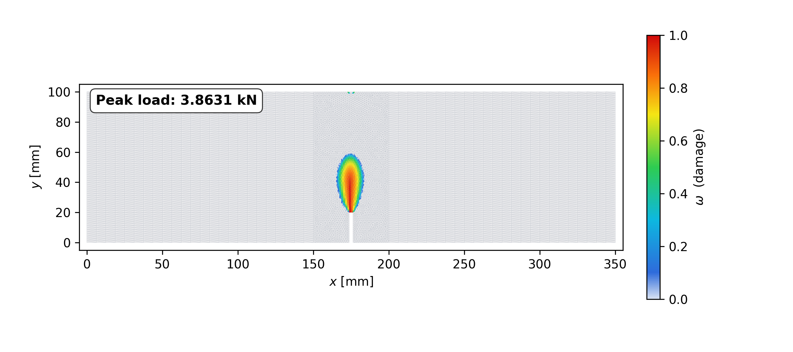
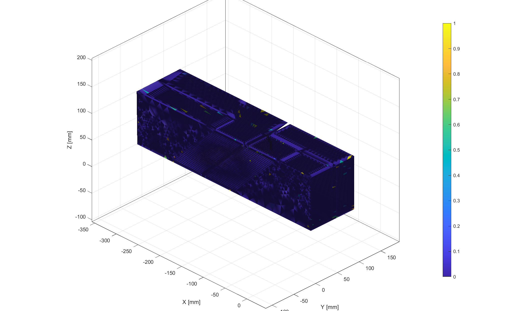

Three-point bending
MATLAB solver, Abaqus UMAT workflow, Load-CMOD comparison, damage fields, timing, and memory figures.
Open folderFinite element fracture simulation
This repository collects three-point bending, Nooru-Mohamed, and torsion examples with solver code, comparison plots, and reproducible run notes.

Benchmark cases
MATLAB solver, Abaqus UMAT workflow, Load-CMOD comparison, damage fields, timing, and memory figures.
Open folder3D TET4 mesh visualization and vectorized live damage simulation with Oliver crack-band regularization.
Open folderQuasi-static torsion damage solver with multi-view animation, torque-theta curves, and peak damage output.
Open folderSelected outputs






Execution guide
3PB/Matlab/solver_main_3pb.m
Run from 3PB/Matlab.
abaqus cae noGUI=RUN_3PB_ABAQUS_FULL_MATCH_MATLAB.py
Run from 3PB/abaqus.
python make_plots.py
Run from 3PB/Comparison/comparison_plots.
damage_static_NR_vectorized_LIVE_damage_different_colours('Job-1', opts)
Run from Noor mohammad/Mesh.
run_torsion_stress_strain_static_fast_modvm_multiview_video
Run from Torsion/working.